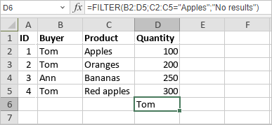

FILTER Funkcija
FILTER funkcija je jedna od funkcija za pretragu i reference. Koristi se za filtriranje opsega podataka i vraćanje rezultata koji odgovaraju zadatim kriterijumima. FILTER funkcija izvlači samo neophodne podatke, a rezultati se ažuriraju kada se originalni podaci promene.
Sintaksa
FILTER(array, include, [if_empty])
FILTER funkcija ima sledeće argumente:
| Argument | Opis |
|---|---|
| array | Opseg ćelija koje treba filtrirati. |
| include | Kriterijumi filtriranja dati kao Booleov niz (TRUE/FALSE) iste visine (kolone) i širine (redovi) kao i opseg. |
| if_empty | Vrednost koja se vraća kada filter ne daje rezultate. Ovaj argument je opcion. |
Napomene
Napomena: ovo je formula niza. Za više informacija, pročitajte Članak o unosu formula niza.
Kako primeniti FILTER funkciju.
Primeri
Slika ispod prikazuje rezultat koji vraća FILTER funkcija.
